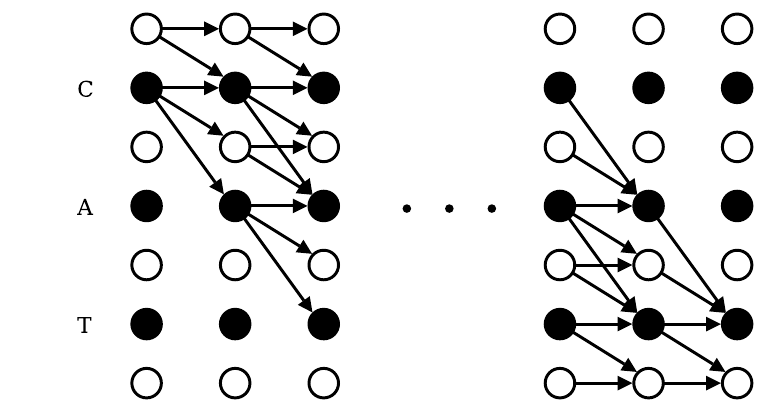

On this page
You know me, I’m gonna talk about loss functions now! Let’s start with binary cross entropy.
BCE is how you score a coin-flip prediction. The model says how likely it thinks a class is present, and BCE measures how wrong that probability was. Confident and right, tiny loss. Confident and wrong, the loss blows up.
Read it in plain language: for each class $i$, if the label is 1 you pay $-\log(p_i)$, and if the label is 0 you pay $-\log(1-p_i)$. Only one of the two terms is ever active.
That asymmetry is the entire personality of this loss: being confident and right is cheap, being confident and wrong is ruinous.
Where $p_i$ is the $\text{sigmoid}(\text{logit}_i)$ and $y_i$ is whether a class was present (ground truth).
Two steps. First, squash each logit through a sigmoid to get a probability. Then score it with BCE against the ground truth. Each class is its own independent yes-or-no bet, so nothing stops you from running this on multi-label data: sigmoid every logit, BCE per class, average over classes. That is how you model multiple classes co-occurring.
With BCE you can’t compress the label into one integer anymore, so you need to have a multi-hot vector. You must determine the cross-entropy for each class and then sum over them.
This checks every class independently. BCE needs a multi-hot vector because each class is treated as an independent yes/no problem.
def bce_with_logits_loss(logits, targets):
"""
logits: (N, C) raw outputs
targets: (N, C) multi-hot labels {0,1}
"""
# sigmoid
probs = 1 / (1 + torch.exp(-logits))
# binary cross entropy per class
bce = -(targets * torch.log(probs) + (1 - targets) * torch.log(1 - probs))
# average over classes and batch
loss = bce.mean()
return loss
Categorical cross entropy is BCE with a one-hot target and one extra rule: exactly one class can be true. The probabilities come from $p_i = \text{softmax}(z)_i$, and the target is all zeros except a single 1.
With categorical cross entropy you apply a softmax over logits and get a probability over $C$ classes.
Then you apply categorical cross-entropy against a one-hot target. If the predicted probability for the correct class $k$ is $p$, then CE is:
It only looks at the correct class’s probability. CE assumes mutual exclusivity, that exactly one class is correct. So, that’s why you get categorical cross entropy, you can show it as a single index. Internally, PyTorch converts that into a one-hot vector. The loss just turns into taking the probability of the correct class.
Remember negative log means lower loss is higher probability; it’s just like the negative log likelihood of the true class under the predicted distribution.
CE punishes the model when it assigns low probability to the true class.
Why not just use mean squared error for classification? Here is one datapoint, true label 1, and a slider for the predicted probability $p$. Two losses, two gradients, live:
How to play
def cross_entropy_loss(logits, target_index):
"""
logits: (N, C) raw outputs
target_index: (N,) integer labels (0 <= y < C)
"""
# softmax
exp_logits = torch.exp(logits)
probs = exp_logits / exp_logits.sum(dim=1, keepdim=True)
# pick probability of the correct class
correct_class_probs = probs[torch.arange(len(target_index)), target_index]
# negative log likelihood
loss = -torch.log(correct_class_probs).mean()
return loss
Softmax is a competition with a fixed prize. There is exactly 1.0 probability to hand out, so when class 0 gets more confident, classes 1 and 2 must get less. Drag the first logit and watch the blue bar steal height from the other two. That stealing is the whole reason cross-entropy works for classification. Now flip to sigmoid mode: same logits, but the bars stop caring about each other. Three separate coin flips. That is BCE, and it is why you use it when labels can co-occur.
The numerator e to the z_i is how loudly class i shouts; the denominator is how loudly all three classes shout together. Divide, and class i gets its share of the fixed 1.0 prize. That division is the competition.
Softmax is one prize and three competitors, so raising one bar drains the others. Sigmoid is three independent coin flips, so each bar moves on its own. Use softmax when exactly one label is right, sigmoid when labels can co-occur. Pick the wrong one and the loss teaches the wrong lesson.
How to play
You have seen what a loss function computes for one prediction. Now zoom out. The loss over all the weights is a landscape, and training is a hike through it in the dark. Gradient descent only feels the slope under its feet, one step at a time:
Read it: $w$ is where you stand, $\nabla L(w)$ is the slope under your feet, $\eta$ is your step size (the learning rate), and you step downhill. That is the whole algorithm. Everything painful about training comes from the shape of the ground.
Here is a toy landscape with an honest formula so you can see the ground for yourself:
A gentle bowl with two pits dug into it: a deep pit bottoming out near $(1.77, -1.18)$ where $f = -7.31$ (the global minimum, marked gold) and a shallow pit near $(-1.56, 1.37)$ where $f = -2.34$ (a local minimum, marked orange). Plain gradient descent cannot tell them apart; it just walks downhill from wherever it starts. Pick a start, pick a learning rate, press play. The red trail is your hike, the curve below is the loss over time.
How to play
Curious: pick a start and a learning rate below to run your own.
Above, you walked the hill yourself: pick a start, pick a learning rate, watch the red trail wind down. In a real network nobody hand-walks. The optimizer does the stepping, and the stepping strategy is half the game. So here is the same idea as a race: one hill, one start, three walkers.
How to play
One honest footnote: this race stops every runner the moment its loss drops below 0.5, so nobody actually lands on the bottom. Watch the legend instead: momentum usually gets there first, SGD zigzags in second, and Adam walks straight down the middle. The orbiting-Adam phenomenon is real with a fixed learning rate, but this toy freezes the race before you'd see it.
If we had a sequence of input frames, and we knew the label for each frame (we don’t here) then we could just apply CE at each frame and average.
Where $y_t$ is the ground truth label for frame $t$. But this assumes a frame-to-label alignment. We don’t have labels for every frame and the target tokens are much shorter than input. The speech sequence length typically 1000 frames for 10 sec is much longer than the text token, maybe 20 words and we don’t know frame to token alignment.
We need a loss that doesn’t require explicit alignment and can collapse variable length frame prediction into a shorter token length. This is where “Connectionist Temporal Classification” (CTC) loss comes to play.
CTC augments the vocabulary with a blank token, no label. This allows the frames to correspond to no output symbols. So, now you have $T$ frames and each frame gets a probability distribution over $V+1$ (tokens + blank).
To get final transcriptions from a frame sequence you have to merge their predictions. You merge repeated tokens and remove blanks. CTC loss uses dynamic programming to sum the probabilities of all possible alignments between frames and target tokens and does this efficiently.
10 input frames, one prediction per frame
3 output tokens
The blank token soaks up the extra frames. Ten noisy frames collapse to three real tokens, so the model never needs to know where each letter starts or ends.
That diagram is the whole trick, but it is static. Here, lay down alignments yourself and watch the collapse rule do its thing. Click cells left to right, one per frame, to build a path:
How to play
Each frame has a probability mass over many tokens and thus can create multiple alignments. We sum over all valid alignments that lead to ground truth. But, this is a lot of alignments. Over $T$ frames with $|V| + 1$ possible paths, you get $(|V| + 1)^T$ paths. Even with 50 symbols per frame and 100 frames you get $50^{100}$ paths.
With CTC the model doesn’t output one label, it outputs a probability distribution over all possible labels at each frame. Alignments are not generated arbitrarily from predictions, they are constrained by the ground truth. Alignment is one possible frame level sequence that when collapsed equal to the ground truth.
The predictions supply the probability at each frame and the ground truth constrain which sequence of choices we care about. We compute the total probability of the ground truth string by summing over all valid alignment paths.
In plain language: pick one alignment path $\pi$, multiply the model's per-frame probabilities along it, then do that for every path that collapses to $y$ and add them up. With the toy table above, the path c c - a t t scores:
There are 84 paths that collapse to "cat"; their probabilities add up to $P(\text{cat}|x) = 0.347$. That sum is the model's total belief that the audio says "cat", over every timing it can imagine. No single alignment is ever chosen during training.
Since multiple alignments can collapse to the same label sequence $y$, the total probability of $y$ is the sum of all alignment probabilities.
The CTC loss is then just negative log likelihood:
Same negative-log trick as cross-entropy, one level up. The toy table gives $P(\text{cat}|x) = 0.347$, so the loss is $-\log(0.347) = 1.06$. If the model piles its mass onto alignments that collapse to the right transcript, the sum approaches 1 and the loss approaches 0. If the mass leaks onto wrong transcripts, the loss grows. The DP just computes that sum without enumerating paths.
Well that’s a lot of math that you probably don’t need, but the big idea here is that we need to find the alignments that collapse to the target word and use our model’s probability predictions to score each valid alignment. CTC doesn’t enumerate every single alignment though. It uses forward-backward dynamic programming algorithm to efficiently sum their probabilities.
At each input you can output either a symbol or a blank token. A valid alignment is any sequence of that collapse to the ground truth after removing blanks and merging consecutive duplicates. You can think of this as a leetcode hard problem, counting paths. We need to count how many paths collapse to the target sequence and once we have that we can replace those counts with probabilities.
A naive CTC would be a softmax with repeat collapse. You consider the single argmax alignment and collapse repeats accordingly. It’s simple and fast and it doesn’t work! It assumes each character or phoneme is well aligned in time or clearly segmented. Misalignment and variable timing will cause errors.
Let’s say we have 4 frames and take a small example like CAT and say our vocabulary is $\{C, A, T, blank\}$. Valid alignments are:
{C, A, T, -}{C, A, -, T}{C, -, A, T}{-, C, A, T}{C, C, A, T}{C, A, A, T}{C, A, T, T}We’re basically trying to insert our letters into 4 frames in order. The first four alignments place each letter once and let one blank soak up the spare frame; the last three double up a letter instead, and the merge rule collapses the repeat away. So 7 of the $4^4 = 256$ possible 4-frame sequences are valid alignments. If we had 10 frames and 4 letters that would be $4^{10}$ sequences, although most would not collapse to CAT.
CTC builds an extended target sequence with blanks inserted: $Y’ = \_C\_A\_T\_$.
Where length is $2U + 1$. Now let’s define a DP table. Our original target of length 3 has been extended to 7. Blanks are guard rails, they allow for variable timing and disambiguating repeats. Now think of aligning the 6 frames to the 7 positions in the extended sequence. At each frame you stay on the same symbol or move to the next symbol. Each step you can:
This is like a lattice, each node is $(t,s)$ at time $t$ and target position $s$. So, now our table looks like 6 frames/rows by 7 alignments/columns, ($T \times 2U+1$). Number of rows are your input length and columns are the extended target length. Time axis is how far we have processed the input and the extended target axis is how far we’ve matched in to the target string. A path through this grid is one alignment.
From $(t,s)$ the dp says what is the probability (or count) of being aligned to this position $s$ in the extended target.
Graves, A., Fernández, S., Gomez, F., and Schmidhuber, J. Connectionist Temporal Classification: Labelling Unsegmented Sequence Data with Recurrent Neural Networks. Proceedings of the 23rd International Conference on Machine Learning (ICML), 2006. doi:10.1145/1143844.1143891

Figure 3. illustration of the forward backward algorithm applied to the labelling 'CAT'. Black circles represent labels, and white circles represent blanks. Arrows signify allowed transitions. Forward variables are updated in the direction of the arrows, and backward variables are updated against them. The paper's actual figure, cropped from the published ICML 2006 version.
This is the exact lattice the tools below walk through. The black circles are the labels and blanks of the extended target: compare them with the - c - a - t - column headers in the forward table below. The arrows are the stay, step, and skip moves that the table's orange arrows trace row by row. Run the table and watch each column's cells add up exactly the paths this figure draws.
The transition rule: To compute $dp[t][s]$ you could get contribution from the same symbol $(t-1,s)$ or advance by 1 $(t-1,s-1)$ or skipped over the blank token if valid $(t-1, s-2)$. This is the forward algorithm. After filling the whole table the number of valid alignment is: $dp[T][s-2] + dp[T][s-1]$ that is ending at the final character or a trailing blank.
import numpy as np
def ctc_forward(probs, target):
"""
probs: array (T, V) with softmax probs for each frame
V includes all symbols + blank
target: list of symbols, e.g. ['C','A','T']
"""
# 1. Build extended target
extended = ['_']
for ch in target:
extended += [ch, '_']
S = len(extended)
# Map symbol -> index in probs
vocab = {ch: i for i, ch in enumerate(set(extended))}
T = probs.shape[0]
alpha = np.zeros((T, S))
# 2. Initialize first frame
alpha[0][0] = probs[0, vocab[extended[0]]] # prob of blank at t=0
alpha[0][1] = probs[0, vocab[extended[1]]] # prob of 'C' at t=0
# 3. Fill DP table
for t in range(1, T):
for s in range(S):
stay = alpha[t-1][s]
prev = alpha[t-1][s-1] if s-1 >= 0 else 0
skip = alpha[t-1][s-2] if (s-2 >= 0 and extended[s] != extended[s-2]) else 0
alpha[t][s] = probs[t, vocab[extended[s]]] * (stay + prev + skip)
# 4. Final probability
return alpha[T-1][S-1] + alpha[T-1][S-2]
The code above looks like accounting. Watch it run once and it stops looking like accounting: every cell is just asking its three neighbors "how did you get here?" and adding up their answers times today's probability. That is the whole forward algorithm.
Columns are the extended target - c - a - t -: a blank guard rail between every pair of letters (and at both ends), so three letters need seven columns.
Every cell asks three neighbors how they got here and multiplies by today's probability. Six rows later you hold the sum over all 84 alignments without enumerating a single one. That is dynamic programming.
How to play
This is our $p(y|x)$, we just efficiently computed the sum. This is the probability of target under the model.
Okay, so does this actually work? I didn’t run this one myself, so here is the number from the literature instead. Graves et al. trained a bidirectional LSTM with CTC on the TIMIT speech corpus and reported label error rate on the core test set, mean over 5 runs:
Model: BLSTM + CTC, 100 blocks per direction. Dataset: TIMIT (26 MFCC coeffs per frame, 61 phonemes + blank). Source: Graves et al., "Connectionist Temporal Classification", ICML 2006, Table 1 (literature reference, not run here).
But, we also need gradients w.r.t. to the model’s softmax outputs at each frame during training. We need to know at frame 1 how much probability was aligned “A” vs blank. This is the posterior probability.
The forward gives you the prefix probability, probability mass up to $(t,s)$. The backward gives you suffix probability, probability mass from $(t,s)$ to the end. When you use both you get how likely is that frame $t$ really belong to target position $s$?
import numpy as np
def ctc_forward_backward(probs, target):
"""
probs: np.array of shape (T, V) with softmax probabilities
(V includes all symbols + blank, accessed by dict)
target: list of symbols, e.g. ['C','A','T']
"""
# Build extended target with blanks
extended = ['_']
for ch in target:
extended += [ch, '_']
S = len(extended) # extended length
T = probs.shape[0] # number of frames
# Map symbol -> index in probs
vocab = {ch: i for i, ch in enumerate(set(extended))}
# Forward DP
alpha = np.zeros((T, S))
alpha[0][0] = probs[0, vocab[extended[0]]]
alpha[0][1] = probs[0, vocab[extended[1]]]
for t in range(1, T):
for s in range(S):
stay = alpha[t-1][s]
prev = alpha[t-1][s-1] if s-1 >= 0 else 0
skip = alpha[t-1][s-2] if (s-2 >= 0 and extended[s] != extended[s-2]) else 0
alpha[t][s] = probs[t, vocab[extended[s]]] * (stay + prev + skip)
# Backward DP
beta = np.zeros((T, S))
# initialize last frame
beta[T-1][S-1] = probs[T-1, vocab[extended[S-1]]] # last blank
beta[T-1][S-2] = probs[T-1, vocab[extended[S-2]]] # last symbol
for t in reversed(range(T-1)): # from T-2 down to 0
for s in range(S):
same = beta[t+1][s]
nxt = beta[t+1][s+1] if s+1 < S else 0
skip = beta[t+1][s+2] if (s+2 < S and extended[s] != extended[s+2]) else 0
beta[t][s] = probs[t, vocab[extended[s]]] * (same + nxt + skip)
# Total probability (should match forward and backward)
total_prob = alpha[T-1][S-1] + alpha[T-1][S-2]
return alpha, beta, total_prob, extended
The path toy showed you one alignment. Training never picks one. Here is where the credit actually goes. Each cell below answers one question: how much does frame $t$ belong to position $s$ of the target? Untrained, the answer is "everywhere, a little". Trained, the answer is "right here, a lot". That sharpening is learning.
How to play
Training is not "pick the best path". It is "spread credit over all paths". Watch the mass smear across the valid region, then concentrate as the model learns. The per-frame softmax tables are fixed illustrative toys, not a real model's output. Term by term: $\alpha(t,s)$ is the probability mass of all path prefixes reaching $(t,s)$, flowing in from the past. $\beta(t,s)$ is the mass of all suffixes leaving $(t,s)$, flowing out to the future. Both count frame $t$'s own softmax probability $y_t(s)$ once, so the product counts it twice and we divide it out. $P(y|x)$ normalizes the mass into a posterior. And the gradient at each frame is just this posterior minus what the model predicted.
At inference, we need to figure out which output sequence to return. If the model is confident and the output space is small or constrained then a greedy decoding is okay. But, that would throw away a lot of probability mass. Beam search recovers some of it by merging multiple paths that collapse to the same candidate sequence.
def simple_ctc_beam_search(probs, beam_size=3, top_k=3):
"""
probs: (T, V) softmax probabilities over vocab (incl blank "_")
"""
beams = {"": 1.0} # start with empty prefix and prob=1
for t in range(len(probs)):
new_beams = {}
# pick top_k symbols at this frame
top_syms = np.argsort(probs[t])[-top_k:]
for prefix, prob in beams.items():
for sym in top_syms:
p = probs[t][sym]
if sym == "_":
new_prefix = prefix
else:
# collapse rule: if repeat, don't double add
if prefix.endswith(sym):
new_prefix = prefix # same seq
else:
new_prefix = prefix + sym
# accumulate probability
new_beams[new_prefix] = new_beams.get(new_prefix, 0) + prob * p
# prune to top beam_size
beams = dict(sorted(new_beams.items(), key=lambda x: -x[1])[:beam_size])
return max(beams.items(), key=lambda x: x[1])
Greedy decoding is lazy. It takes the best symbol at each frame and calls it a day, which means it sees exactly one path: "ab", worth 0.0900. But fourteen other paths collapse to "ab" too, and greedy never looks at them. Press play with beam width 3 and watch the "ab" bar eat fifteen thin segments. That stacking IS beam search: it recovers probability mass by merging. The code above does this in twenty-seven lines; the bars show you what those lines are actually doing.
| frame | _ (blank) | a | b |
|---|---|---|---|
| t0 | 0.20 | 0.50 | 0.30 |
| t1 | 0.20 | 0.50 | 0.30 |
| t2 | 0.25 | 0.15 | 0.60 |
| t3 | 0.25 | 0.15 | 0.60 |
Fixed illustrative table. Collapse rule is standard CTC: merge repeats first, then drop blanks.
Greedy sees one path. Beam search sees every path that collapses to the same answer and adds them up. That merging is where the extra probability mass comes from, and it is the entire reason beam search beats greedy.
How to play